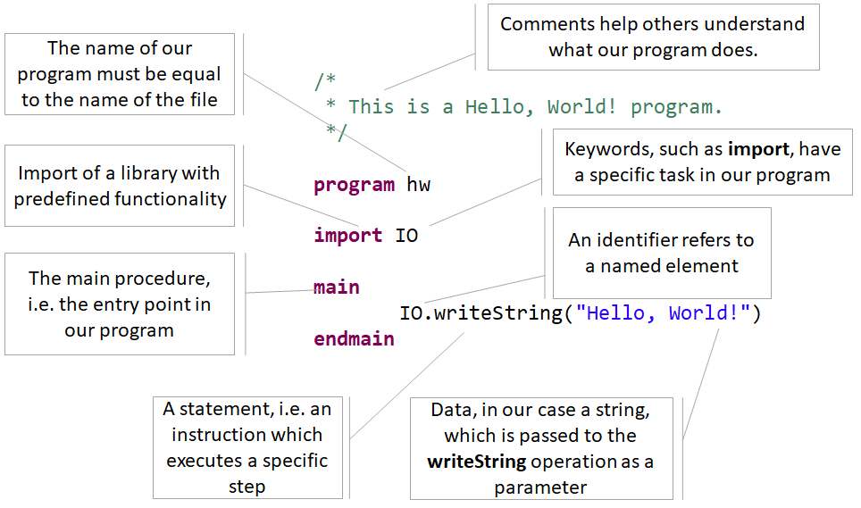
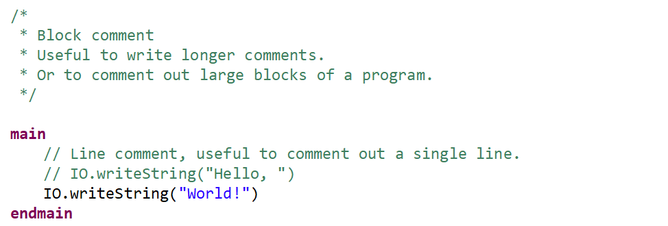
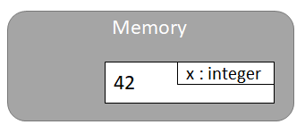
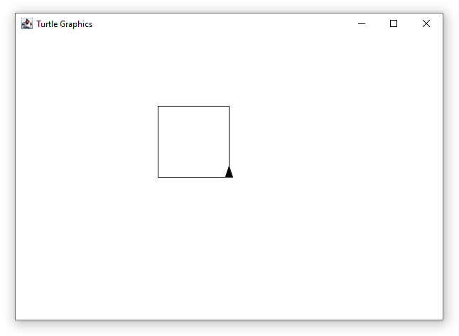

In this chapter we will talk a bit about algorithms and write our first simple programs with MuLE.
Before we start programming, we have to talk about algorithms, after all they represent the core of any program.
However, algorithms are specifically restricted to programming, in fact, we also can follow specific algorithms as human beings.
Let us take a look at a simple example.
When withdrawing money from an ATM, we have to follow a specific set of steps, for example:
Sounds about right, as a human being we will have no trouble following these steps.
However, a machine will have difficulties executing this algorithm, since there is at least one ambiduous step.
Step 2 tells us to choose a pre-set amount or enter the amount of cash, leaving this decision to the user.
A machine does not know which option to take, so we have to specify it further:
As we can see, we have added a couple of weird sounding steps, especially when it comes to go to instructions.
The go to instructions allow us to skip some steps or repeat previous steps depending on a specific condition.
This way we have removed the ambiguity from the previous algorithm.
Of course, these steps are still heavily abstracted and we may need to specify them further, but we won't go there yet.
What we need to know now, machines cannot think the way humans do, unlike machines we are capable of abstract thinking.
When programming a machine however, we have to define every step at lower levels of abstractions.
Thankfully, modern programming languages work at a relatively high level, so in most cases we don't have to address the hardware directly.
So what is an algorithm in the context of Computer Science?
An algorithms is a finite, unambiguous sequence of strict, executable instructions which solve a specific problem.
Meaning, that when we encounter a problem, e.g. How do I withdraw money from an ATM, we have an abstract definition of said problem.
We then need to formulate an algorithm to solve that problem similarly how we did it before.
And then we can start translating the algorithm into a program using a programming language.
There is a lot more to algorithms and their properties, but we are here to program and not talk about dry mathematical theory, aren't we?
If you have followed the getting started guide, you have propably already written and executed you first "Hello, World!" program.
If you have not, we strongly suggest that you do it now.

There is quite a lot of information in this example, so let us try to summarize it:
Comments are a very useful feature, as the name suggests, they are meant to be used to write comments for your code.
Even if you understand now, what you code is doing, if you look at it in a couple of weeks or even months, you will have to invest time to understand you own program.
If you write meaningful comments for you programs, both your future self as well as your colleagues will be very grateful.

The word informatics is an amalgam of two words: infortmaion and mathematics. Or in other words, informatics is built around data and what we can do with it.
Thus the core idea of any program is usually to handle chunks of data, and in order to know what to do, each piece of information has a data type.
Let's take a look at the following program, feel free to copy and paste the code into your Eclipse and run it.
As we can see, we print different values on the console and we need different operations for different types of values.
We can not print an integer using the writeString operation since it expects a string value as a parameter.
MuLE supports four basic data types:
The concept of variables should sound familiar, pretty sure most of us have heard it in the mathematics class.
In the mathematics variables represent placeholders for values, e.g. in f(x) = mx + t we have three variables, with x also acting as a parameter.
In most programming languages, variables act as a named container for values, i.e. we can store our data there.
The image below gives an extremely simplified explanation of variables in the memory of a program, i.e. we have a container with the name x where we can store integer values. The currently stored value is 42.

The following code demonstrates the basic usage of variables, go ahead and try it out in your Eclipse.
When talking about our ATM algorithm at the beginning of this chapter, we have mentioned steps in which user had to enter her PIN or the amount of money.
This values are specific to each user, meaning that there should be a possibility for the user to enter this information and pass it to the machine.
To achieve this we use the IO library again, which we have already used to print values on the console.
This time we have to use one of the read operations, e.g. readString if we want to read a string value, which we will have to enter from the console view.
Please notice, that the read operation does not accept any parameters, unlike the write operations.
However it yields us a value, which we promptly store in a variable. We can now use this variable to access the data which we have entered earlier, for example to print it on the console.
Arithmetic operators allow us to parforms basic arithmetic operations on numeric values, i.e. values of types integer and rational.
Similar to our arithmetic operations, we can apply a specific concatenation operator & on two strings to create a single string from them.
Sometimes we have the right data but with the wrong data type.
For example, we want to concatenate a number to a string value.
We can't simply do that using the concatenation operator since it expects two string values.
So first, we need to transform our number into a string.
We can do this by importing the Strings library and using some of its operations, for example integerToString.
And as the final topic of this chapter, we will take a look at the Turtle library.
This library allows us to draw pictures programmatically, which, as we all know, is much more fun than computing arithmetic operations, isn't it.
To use the Turtle library, we have to import it first.
The library is very simple, we can draw lines using the forward(LENGTH_PIXELS) opeation and change our bearing using the left(ANGLE) or right(ANGLE) operations.
There are other operations of course, but we don't need them right now.
